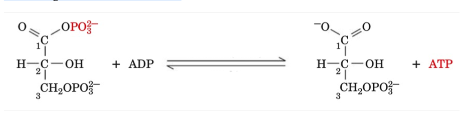
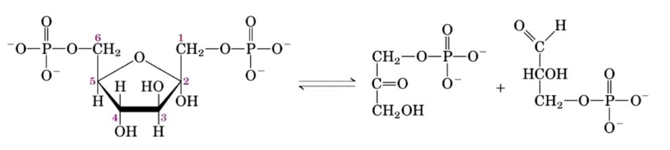
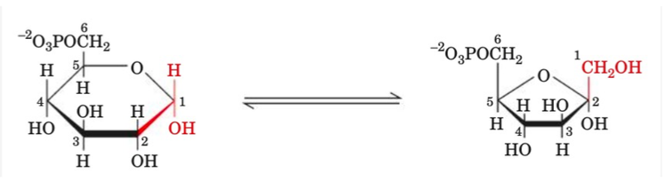
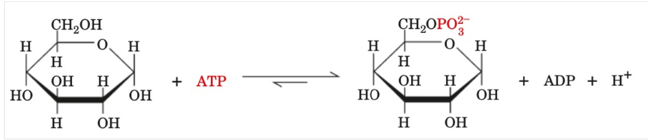

01. Per accoppiamento energetico si intende ..
02. Quale delle seguenti affermazioni sulla forma ciclica (ad anello) del D-glucosio è vera?
03. Quale delle seguenti affermazioni sul modo in cui un disaccaride si forma da due monosaccaridi è vera?
04. Si definiscono enantiomeri due isomeri che sono tra loro:
05. I carboidrati sono immagazzinati a scopo energetico sotto forma di:
01. Il D-glucosio e il D-mannosio
02. Il fruttosio è:
03. Quale dei seguenti è un polisaccaride strutturale nelle cellule vegetali?
01. Quale di queste affermazioni riguardo al glicogeno è FALSA?
01. Quale delle seguenti affermazioni sul trasporto attivo è vera?
01. Gli acidi biliari e i loro sali sono:
01. Qual è l’effetto comune di adrenalina e glucagone sul metabolismo del glicogeno nel fegato?
01. Quali delle seguenti affermazioni relative alle vie metaboliche sono corrette?A) Le vie metaboliche sono irreversibili.B) Ogni via metabolica ha una prima tappa di controllo.C) Le vie cataboliche e le vie anaboliche sono differenti.
02. Quale tra le seguenti affermazioni è corretta?
03. Quali sono i meccanismi a livello cellulare utilizzati per controllare il flusso nelle tappe che determinano la velocità di una via metabolica.
04. Quale di queste affermazioni riguardo al metabolismo NON è corretta?
01. La fosfofruttochinasi-1 (PFK1) è l'enzima che catalizza il "committed step" della glicolisi. Cosa si intende per "committed step"?
02. Completa la seguente affermazione: Nella fase I (Reazioni 1-5) della glicolisi, una molecola di glucosio è trasformata in [A] molecole di gliceraldeide-3-fosfato in una serie di reazioni in cui si ha il consumo di due molecole di [B]. Nella fase II della glicolisi (Reazioni 6-10), le [A] molecole di gliceraldeide-3-fosfato sono trasformate in due molecole di piruvato, producendo 4 ATP e 2 [C].
03. L'enzima proteolitico pepsina, opera a livello gastrico una prima grossolana digestione delle proteine. La pepsina ha una attività limitata ad uno specifico intervallo di pH. A quale valore di pH corrisponde la massima attività di questo enzima?
04. Quale dei seguenti enzimi NON viene utilizzato per intrappolare lo zucchero nella cellula?
05. La seguente reazione descrive...

06. Quale enzima catalizza la seguente reazione della via glicolitica?

07. Nella via glicolitica, il Fruttosio-1,6-bisfosfato viene convertito in
08. Cosa descrive e quale enzima catalizza la reazione riportata in figura?

09. La seguente reazione descrive:

10. La fosfofruttochinasi catalizza
11. La fosfoglucosio isomerasi catalizza
12. L’esochinasi catalizza ...
13. La glicolisi trasforma il glucosio in due unità C3. L’energia libera rilasciata durante il processo è impiegata per sintetizzare ATP partendo da ADP e Pi. Nelle 10 tappe della via glicolitica, gli enzimi catalizzano le reazioni ...
01. Relativamente all'assorbimento intestinale dei lipidi. Qual è il destino degli acidi grassi a catena lunga contenuti nelle micelle?
02. L'insieme dei processi che permettono a un organismo di mantenere al suo interno condizioni chimico-fisiche stabili è definito:
03. Ognuno dei seguenti enzimi catalizza una fase limitante di una via del metabolismo dei carboidrati TRANNE:
04. La regolazione della via glicolitica può avvenire
01. Quale tra le seguenti affermazioni è corretta?
02. Dopo un breve periodo di esercizio fisico intenso, l'attività della piruvato deidrogenasi muscolare aumenta notevolmente. Questo aumento dell'attività è probabilmente dovuto a:
03. Quale tra i seguenti è un enzima necessario per la glicolisi?
04. Quale tra le seguenti affermazioni relativamente alla glicogenolisi è corretta
05. La gluconeogenesi è un processo metabolico mediante il quale
06. Quale affermazione relativa alla piruvato deidrogenasi è ERRATA?
01. Quale delle seguenti affermazioni riguardo al destino del piruvato nell'uomo è FALSA?
02. La Citrato sintasi catalizza la reazione
03. Quale tra le seguenti affermazioni relativamente al Ciclo dell’Acido Citrico è corretta
04. Quale affermazione relativa all'enzima succinato deidrogenasi è corretta
01. Quali sono le principali caratteristiche dell'ubichinone? Individua l'affermazione errata.
02. Quale dei seguenti elementi fornisce direttamente l'energia necessaria a formare l'ATP nel mitocondrio?
03. Quale ruolo ha l'ubichinone nella respirazione cellulare?
04. quale affermazione relativa all' Ubichinone è corretta
05. Prima che l'acido piruvico entri nel ciclo di Krebs deve essere convertito in .....
01. L'enzima mitocondriale succinato deidrogenasi, è l'unico enzima del ciclo dell'acido citrico ancorato alla membrana mitocondriale interna... Questo enzima ha una duplice funzione...
02. Considerando la catena di trasporto degli elettroni, quale dei seguenti composti ha maggior tendenza ad accettare elettroni?
01. Quale molecola, importante intermedio metabolico viene prodotta ad ogni ciclo di beta-ossidazione di un acido grasso?
02. La successione di eventi in grado di produrre la quantità maggiore di energia, mediante ossidazione degli acidi grassi, consiste nelle seguenti fasi:
03. Alcuni acidi grassi non possono essere direttamente ossidati ma richiedono dei passaggi enzimatici aggiuntivi per la corretta e completa beta-ossidazione. Di quali acidi grassi si tratta?
04. La beta-ossidazione di acidi grassi con numero dispari di atomi di carbonio
01. Quale delle seguenti affermazioni descrive meglio il modo in cui l'organismo crea o elabora i corpi chetonici?
02. Cosa si intende per "amminoacidi chetogenici"?
03. Quali tra i seguenti amminoacidi sono "amminoacidi esclusivamente chetogenici"?
04. Cosa si intende per "amminoacidi chetogenici"? (ripetizione opzione)
05. I corpi chetonici
06. Che ruolo svolge il coenzima A nel ciclo dell'acido citrico?
01. Il glucagone è.....
02. Nelle reazioni di transamminazione, Il gruppo alfa-amminico di un amminoacido viene trasferito all’atomo di carbonio alfa dell’alfa-chetoglutarato... Quale è lo scopo biologico?
03. Si può distinguere il glicogeno principalmente in glicogeno muscolare e glicogeno epatico. Quale è la funzione di un tipo rispetto all'altro?
04. Per la sintesi del glicogeno, il glucosio deve essere convertito in
05. La glicogenina è .......
06. Qual è l'effetto del glucagone sul metabolismo dei carboidrati?
01. Durante la fermentazione alcolica, L’enzima alcol deidrogenasi,
01. Quale è la funzione dei reagenti DTT e beta-mercaptoetanolo nel trattamento delle proteine?
01. Generalmente, In che modo le proteine vengono separate nell'elettroforesi bidimensionale?
02. Quale è la funzione del sodio dodecilsolfato (SDS) nell'elettroforesi per le proteine?
03. Nell'elettroforesi SDS-PAGE, quali proteine migrano più velocemente verso il basso?
04. Il sodio dodecil solfato
01. La sintesi del glucosio a partire dagli amminoacidi è definita come
02. Quale delle seguenti affermazione sugli zimogeni è vera?
03. I tessuti formano acido lattico a partire dal glucosio. Questo fenomeno è definito
04. La glicolisi è regolata da
05. Il Glucosio Uridin-Difosfato (UDPG) è ....
06. Nel glucosio l'orientamento dei gruppi -H e -OH attorno all'atomo di carbonio 5 adiacente al carbonio terminale dell'alcol primario determina ...
07. i polisaccaridi sono .....
08. Nel muscolo scheletrico in condizioni anaerobiche il glucosio è convertito in…
09. Nell'inibizione retroattiva (a feedback)…
10. Quale delle seguenti affermazioni sulla fosforilazione delle proteine è vera?
11. Quale tipo di modificazione covalente viene catalizzato dalle chinasi?
12. Quale delle seguenti affermazioni sugli isozimi (o isoenzimi) è vera?
13. Una chinasi realizza il trasferimento di un gruppo fosforico.
14. Nel ciclo di Krebs, la formazione del citrato a partire dall'ossal-acetato e dall'acetil CoA è catalizzata dalla citrato sintasi ed è una reazione di
15. Il colesterolo è il precursore per la biosintesi di
16. La carnitina è necessaria per il trasporto di
17. L'ossidazione degli acidi grassi avviene
18. Gli enzimi della beta-ossidazione si trovano ...
19. L'importanza dei fosfolipidi come costituenti della membrana cellulare è dovuta al fatto che essi possiedono
20. Quando l'apporto di O2 è insufficiente, il piruvato viene convertito in
01. A un pH inferiore al punto isoelettrico, un amminoacido esiste come
02. La denaturazione di una proteina consiste:
03. Quale delle seguenti considerazioni generali sugli enzimi è FALSA?
04. Quale tipo di acido nucleico forma un legame ad alta energia con un aminoacido durante la sintesi proteica?
05. Nella struttura delle proteine l'alfa-elica e i foglietti beta pieghettati sono esempi di
06. Il pH al quale un enzima ha la massima attività è noto come
07. L'alfa-elica è formata da
08. Il trasporto di elettroni, che si verifica nella membrana interna mitocondriale e porta alla sintesi di ATP, avviene secondo quale dei seguenti processi?
09. Quale tra i seguenti amminoacidi contiene zolfo?
10. Le proteine contengono
11. Identificare nel seguente elenco il legame chimico responsabile della formazione della struttura primaria delle proteine:
12. In una molecola di ATP sono presenti:
01. Quale delle seguenti affermazioni riguardo la molecola dell'acqua è CORRETTA?
01. Quale affermazione riguardo alle molecole idrofobiche è CORRETTA?
01. Le biomolecole sono spesso molecole complesse in cui sono presenti uno o più centri chiralici. Che rilevanza ha la stereoisomeria per queste molecole?
01. Il recettore per l'insulina:
02. Quale caratteristica fondamentale hanno le proteine integrali di membrana localizzate principalmente a livello della membrana citoplasmatica?
01. Per quale motivo il ciclo dell'acido citrico viene appunto definito "ciclo"?
01. Quale intermedio metabolico viene prodotta ad ogni ciclo di beta-ossidazione di un acido grasso?
02. Per quale motivo la carnitina, considerata "brucia grassi" ed utilizzata come integratore, è importante nel metabolismo dei lipidi?